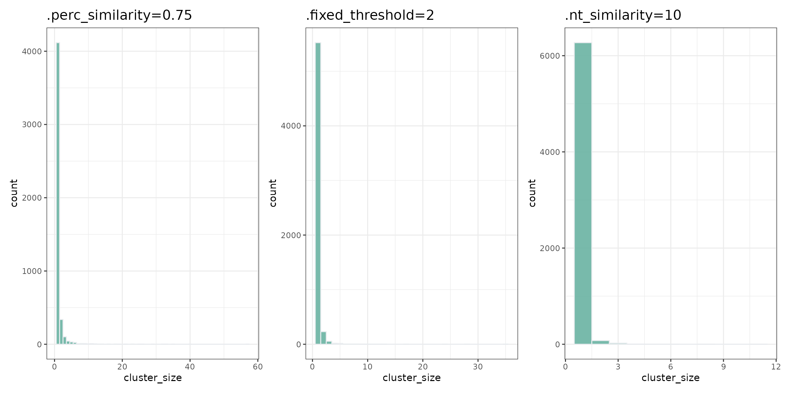

Clustering
ImmunoMind – improving design of T-cell therapies using multi-omics and AI. Research and biopharma partnerships, more details: immunomind.io
support@immunomind.io
Source:vignettes/web_only/clustering.Rmd
clustering.RmdClustering B-cell receptors (BCRs) and T-cell receptors (TCRs) sequences is a common step in the analysis of B and T cells.
In the B-cell repertoire, this step is required for making clonal lineages. B-cell clonal lineage represents a set of B cells that presumably share a common origin (arising from the same VDJ rearrangement event) and a common ancestor. Information about clonal lineages allows you to estimate somatic hypermutation levels and find binding affinity-changing mutations.
T cells that are able to recognize identical epitopes were shown to have high similar TCR (Glanville et al. 2017; Dash et al. 2017). Clustering allows for finding high similar TCR in repertoires that are likely to recognize the same antigens.
Clustering analysis involves two steps. The first step requires calculating the distance between sequences. The second step requires clustering the sequences using the information about the distance between them.
Application of clustering enables you to expand the clonotype concept. A clonotype is a set of cells that supposedly share a common ancestor or properties. There are a few possible ways to define clonotypes. For example, some researchers define clonotypes as a set of sequences that have the same V gene and same nucleotide CDR3 sequence. Other researchers define clonotypes as cell sets that have the same V gene, the same J gene, and the same amino acid CDR3 sequence. Clustering provides you with a way to create new groups of sequences based on your vision.
Calculating the distance
CDR3 region is the most variable region in BCR and TCR. This region is commonly used for calculating the distance between sequences. However, other regions could also be used for calculating this distance — like the full nucleotide reads. You can use any user-defined column of sequences to calculate the distance, since column selection depends solely on your research purpose. For example, the use of ‘nt’ sequences results in more conservative clustering.
Example:
#load the package into the R environment:
library(immunarch)
data(immdata)
data(bcrdata)
TCRdata <- repFilter(immdata, .method = "by.meta", .query = list(Sample = include("A2-i129")))$data
BCRdata <- bcrdata$data
#using aa CDR3 sequences for calculating distance
distTCR <- seqDist( TCRdata, .col = 'CDR3.aa')
#using nt CDR3 sequences for calculating distance
distTCR <- seqDist( TCRdata, .col = 'CDR3.nt')
#using full sequences for calculating distance
distBCR <- seqDist( BCRdata, .col = 'Sequence')Note that a similar CDR3 region could potentially arise from different VDJ rearrangement events. When running the analysis, group the clonotypes with similar CDR3 sequences by V gene, J gene, and/or sequence length to maximize the probability that similar CDR3 sequences arise from the same event (for BCRs) or recognize the same antigens (for TCRs). Such grouping also speeds up and simplifies the distance calculating process.
Grouping by V gene is necessary; grouping by J gene or the sequence length is optional. By default, the sequences are grouped by ‘V.name’ column, ‘J. name’ column, and CDR3 length (since the comparison of CDR3 regions for sequences with different V and J genes is not a common case).
Example:
#group sequence by V.name and length CDR3
distBCR <- seqDist( BCRdata, .group_by = c('V.name'), .group_by_seqLength = T)
#group sequence by V.name and J.name
distBCR <- seqDist( BCRdata, .group_by = c('V.name', 'J.name'), .group_by_seqLength = F)There are several possible approaches to estimating the distance between the sequences.
The default approach is to use the Hamming distance. When sequences have different lengths the distance between them equals infinity. Use this approach if you want to take into consideration only the point mutations excluding the indels.
Example:
distBCR <- seqDist( BCRdata, .col = 'CDR3.aa', .methods = "hamming", .group_by_seqLength = T)When you want to take into consideration not only single mutations but also indels, Levenshtein distance is a more appropriate method to use.
distBCR <- seqDist( BCRdata, .col = 'CDR3.aa', .methods = "lv", .group_by_seqLength = F)Or you could also use the longest common substring:
distBCR <- seqDist( BCRdata, .col = 'CDR3.aa', .methods = "cls", .group_by_seqLength = F)Another way is to write your own function for calculating distance. For example:
Clustering
After calculating the distance, it’s time to cluster your sequences and find TCRs and BCRs that have similar CDR3 sequences or other similar regions. It is possible to run the analysis based only on the similarity of CDR3 sequence, but we recommend not limiting the analysis to this sequence similarity.
In mathematical terms, a clonotype is a vertex in graph. If two clonotypes have the same V and J genes and ‘CDR3.aa’. differs by less than a predefined threshold value, we draw an edge between the vertices. A cluster is a connected component — a set of clonotypes connected by edges.
Clustering is commonly used to expand the concept of a clonotype. For example, you can consider clonotype as a group of sequences with the same amino acid CDR3 sequences, as these sequences are likely to have the same properties.
Example:
#calculate distance
distTCR <- seqDist( TCRdata, .col = 'CDR3.aa')
#clustering TCR by CDR3 regions
clustTCR <- seqCluster(TCRdata, distTCR, .perc_similarity = 0.9)## Warning in seqCluster(TCRdata, distTCR, .perc_similarity = 0.9): Number of
## sequence provided in .data and .dist are not matching!
#calculate number of unique clusters in column 'Cluster'
clustTCR$"A2-i129" %>% .$Cluster %>% unique() %>% length()## [1] 6379In general, the number of clusters you get depends on threshold you defined previously. There are 3 different ways to assign a threshold for clustering:
- Percentage similarity
Requires defining the minimum percentage of similarity for the sequences in your cluster in advance. For example, if you want to find cluster of BCRs that not only have the same V.name, J.name, and CDR3 length — but also have more than 90 percent match in their CDR3.
#clustering TCR
clustTCR <- seqCluster(TCRdata, distTCR, .perc_similarity = 0.75)
#count cluster size
dt_perc_similarity <- clustTCR$"A2-i129" %>% group_by(Cluster) %>% summarise(cluster_size = n())
#calculate number of unique clusters in column 'Cluster'
clustTCR$"A2-i129" %>% .$Cluster %>% unique() %>% length()## [1] 4725- Fixed similarity
Requires directly determining the number of mismatched nucleotides. In case of TCR-recognising the same epitope, use 1 amino acid mismatch in CDR3 sequences.
#clustering TCR
clustTCR <- seqCluster(TCRdata, distTCR, .fixed_threshold = 2)
#count cluster size
dt_fixed_threshold <- clustTCR$"A2-i129" %>% group_by(Cluster) %>% summarise(cluster_size = n())
#calculate number of unique clusters in column 'Cluster'
clustTCR$"A2-i129" %>% .$Cluster %>% unique() %>% length()## [1] 5863- Similarity for every n letters in the sequence
If you want to guarantee that the matches in the sequences are at a set proximity, specify a distance threshold
#clustering TCR
clustTCR <- seqCluster(TCRdata, distTCR, .nt_similarity = 10)
#count cluster size
dt_nt_similarity <- clustTCR$"A2-i129" %>% group_by(Cluster) %>% summarise(cluster_size = n())
#calculate number of unique clusters in column 'Cluster'
clustTCR$"A2-i129" %>% .$Cluster %>% unique() %>% length()## [1] 6377Clustering result
If you made it to this part, then you have successfully clustered your sequences. Congratulations! Now you have a new column “cluster” in your data sheet. You can now generalize the concept of clonotype based on sequence similarity and consider clusters as clonotypes.
Comparing cluster size distributions is a good way to analyse quality of clustering process and to choose the best parameters for functions:
#write small function for the visualization of cluster size destribution
mk_hist <- function(clust_dt, graph_name) {
return(ggplot(clust_dt, aes(x=cluster_size)) + geom_histogram( binwidth=1, fill="#69b3a2", color="#e9ecef", alpha=0.9) +
ggtitle(graph_name) +
theme_bw() +
theme(
plot.title = element_text(size=15)
))
}
# compare plots
mk_hist(dt_perc_similarity, '.perc_similarity=0.75') + mk_hist(dt_fixed_threshold, '.fixed_threshold=2') +
mk_hist(dt_nt_similarity, '.nt_similarity=10')
Other ways to identify B cell clones
There are other packages that provide computational framework for identification of B cell clones. One of the most popular is a scoper package (https://scoper.readthedocs.io/en/stable/vignettes/Scoper-Vignette/#introduction)
Immunarch enables users to integrate results from scoper package for further analysis:
## As of v1.0.0 the AIRR Rearrangement schema is now the default file format.
## A description of the standard is available at https://docs.airr-community.org.
## The legacy Change-O format is supported through arguments to each function
## that allow the input column names to be explicitly defined.
#generate germline sequence
bcr <- bcrdata$data$full_clones %>%
top(2000) %>% # reduce the dataset to save time on examples
repGermline()Add columns ‘sequence_alignment’ required by scoper (https://scoper.readthedocs.io/en/stable/vignettes/Scoper-Vignette/):
#generate `sequence_alignment` column
cols <- c('FR1.nt', 'CDR1.nt', 'FR2.nt', 'CDR2.nt', 'FR3.nt', 'CDR3.nt', 'FR4.nt')
bcr$sequence_alignment <- apply( bcr[ , cols ] , 1 , paste , collapse = "" )Rename columns in scoper format:
ExampleDb <- bcr %>% select(J.first.allele, V.first.allele, CDR3.nt, Germline.sequence, sequence_alignment) %>%
rename(junction = CDR3.nt, v_call = V.first.allele, j_call = J.first.allele, germline_alignment_d_mask = Germline.sequence)Cluster using scoper method:
results <- hierarchicalClones(ExampleDb, threshold=0.15)## Running defineClonesScoper in bulk mode
plot(results, binwidth=0.02)
Note that the column ‘clone_id’ in scoper format has the same meaning as the ‘Cluster’ column in immunarch:
## Rows: 609
## Columns: 7
## $ vjl_group <int> 1, 2, 3, 4, 5, 6, 7, 8, 9, 10, 11, 12, 13, 14, 15, 16,…
## $ sequence_count <int> 1, 1, 1, 1, 1, 1, 1, 1, 1, 1, 1, 2, 3, 3, 5, 3, 1, 2, …
## $ v_call <chr> "IGHV1-18*01", "IGHV1-24*01", "IGHV4-30-2*01", "IGHV4-…
## $ j_call <chr> "IGHJ2*01", "IGHJ3*01", "IGHJ6*01", "IGHJ6*01", "IGHJ6…
## $ junction_length <int> 69, 51, 51, 54, 63, 66, 69, 57, 69, 30, 36, 39, 42, 45…
## $ clone_count <int> 1, 1, 1, 1, 1, 1, 1, 1, 1, 1, 1, 2, 3, 3, 5, 3, 1, 2, …
## $ clone_id <chr> "1", "199", "370", "567", "751", "913", "947", "964", …